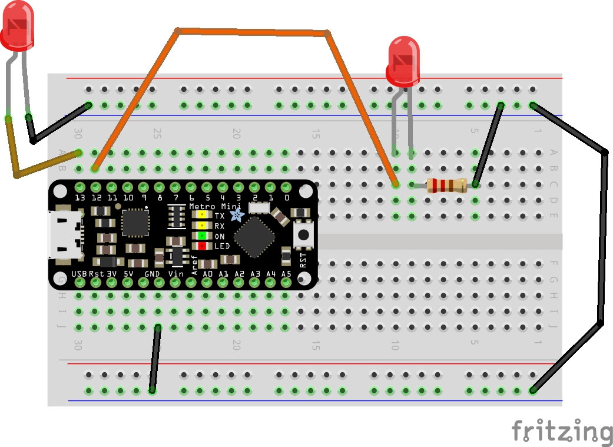
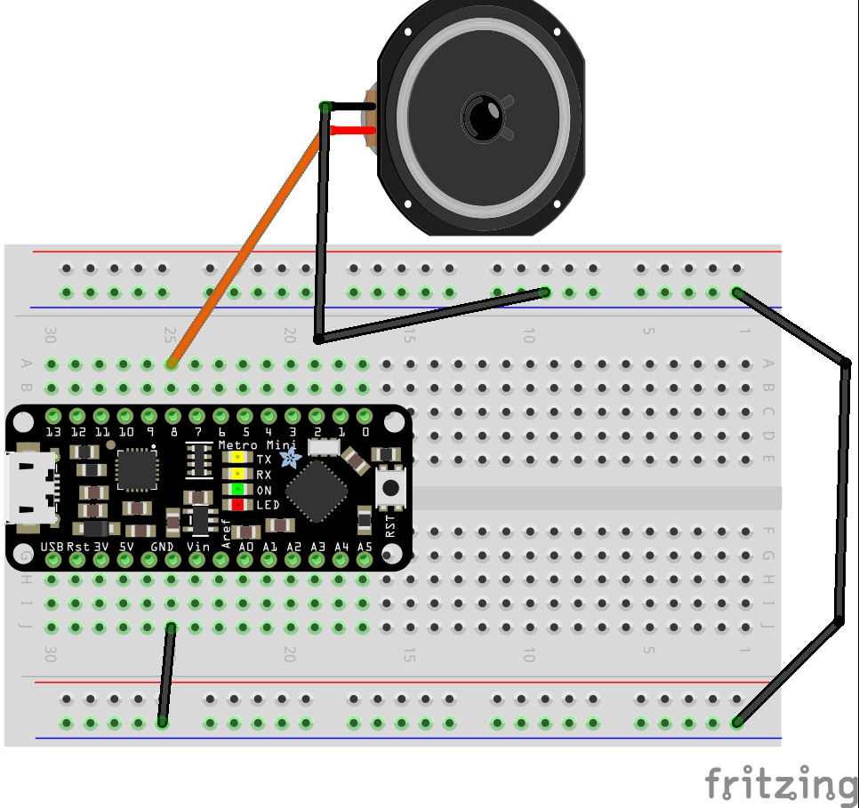
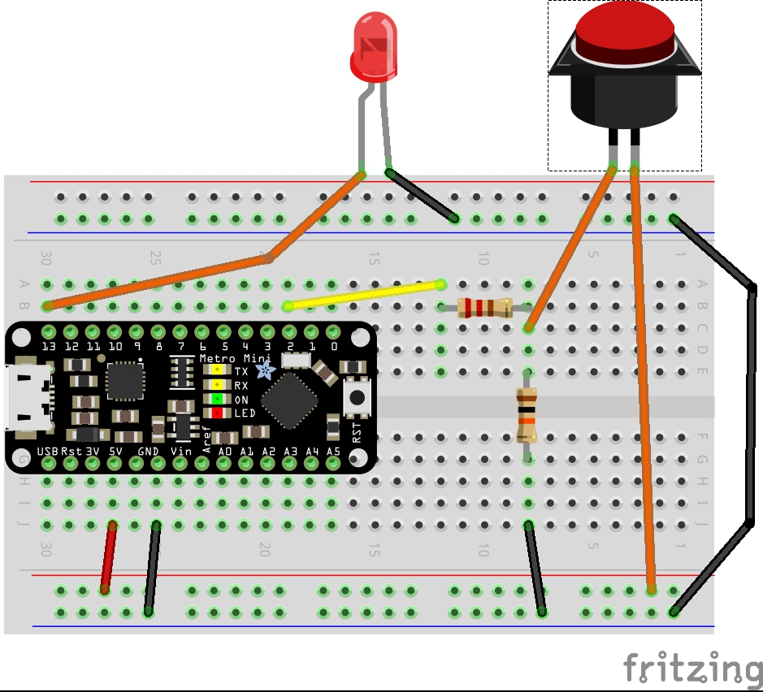
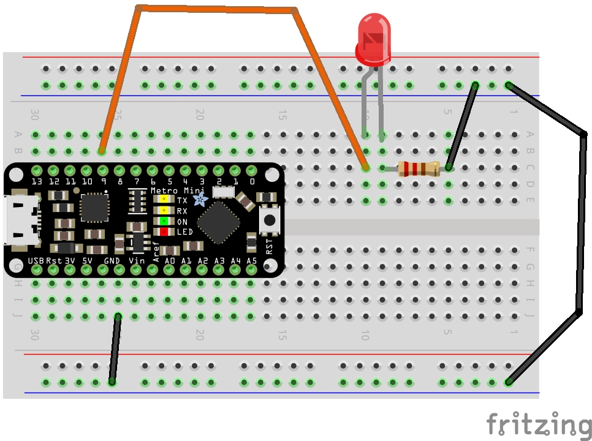
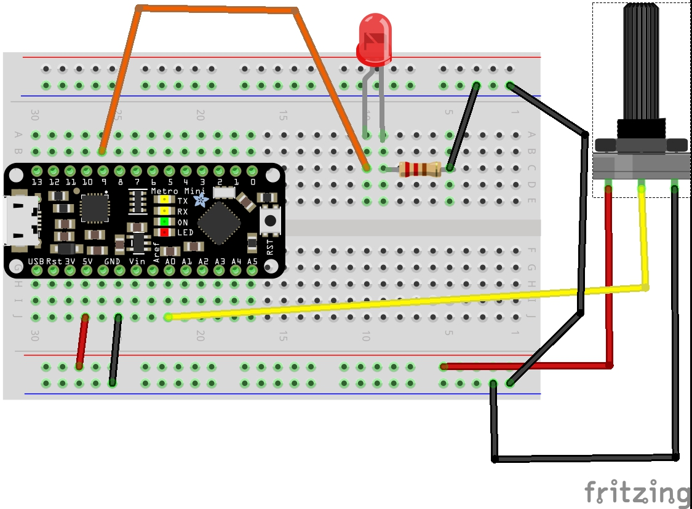

Boom Box Portable Project
For this project we first learned how to wire inputs and outputs on a breadboard connected to an Arduino based on diagrams and using code from built in examples in the Arduino program.
Digital Outputs
 Digital Input
Analog Outputs
Analog Inputs
After learning the basics we had a quiz testing us in which we had to combine all the inputs and outputs of leds, potentiometer, speaker, and buttons together to work with code provided.


After completing the quiz we moved onto the boombox project, where we took aspects from the quiz but took it a step further and customized it with music we converted. We had two tunes playing out of a speaker, one that played by default and another that played when the momentary button was pressed. Additionally a LED was wired so it pulsed with the music. There was two potentiometers, one controlled the speed of the music and the other controlled a separate LED. All of these components would shut off by a switch wired in the circuit. I also wired in a second speaker and changed the code using the commented out parts that made the note switch back and forth between the two speakers to get pseudo stereo.